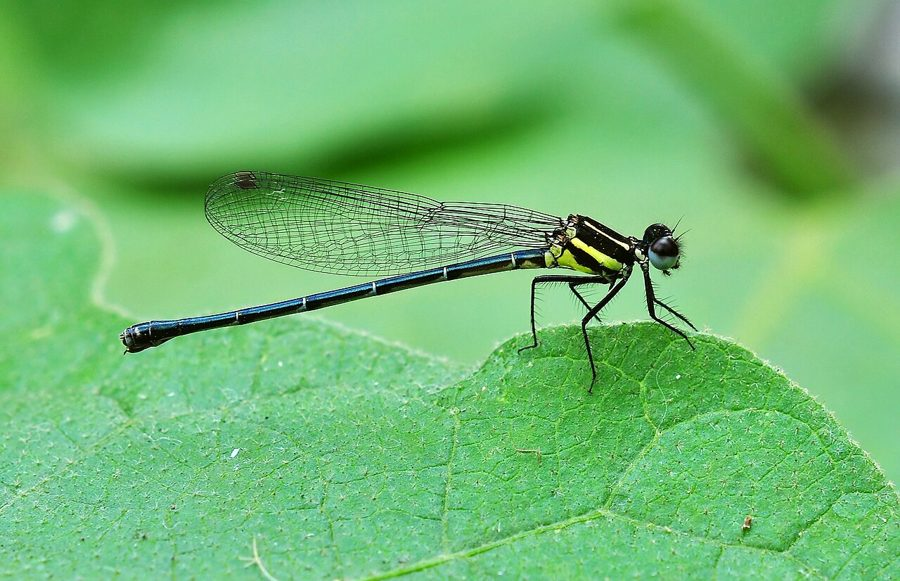

ब्लैक मार्श डार्ट व्याध पतंगBlack Marsh Dart Damselfly
Onychargia atrocyana · Platycnemididae · INS-0196

- Scientific name वैज्ञानिक नाम
- Onychargia atrocyana Selys, 1865
- Family कुल
- Platycnemididae
- Hindi हिंदी
- ब्लैक मार्श डार्ट व्याध पतंग
- Local names स्थानीय नाम
- black marsh dart damselfly, black marsh dart, marsh dart damselfly, kali vyadh patang
- Status here यहाँ की स्थिति
- native
- Movement आवागमन
- Resident, here all year
- Known from कहाँ दर्ज
- Others have published records from the Basti–Ayodhya districts बस्ती–अयोध्या के ज़िलों से दूसरों के प्रकाशित अभिलेख
- IUCN IUCN
- not evaluated
- Review समीक्षा
- not yet reviewed
When to look कब देखें
Present all year. साल भर मौजूद।
Uses and possibilities उपयोग और संभावनाएँ
Drawn from the documented uses in the profile below, where each is labelled traditional, current or a research lead. All uses →
Tell it apart from इनसे अलग पहचानें
ब्लैक मार्श डार्ट व्याध पतंग / Black Marsh Dart Damselfly
Onychargia atrocyana Selys, 1865 — Platycnemididae
ब्लैक मार्श डार्ट व्याध पतंग — दलदली तालाबों, जलकुंभी और खरपतवार से भरे गड्ढों में पाई जाने वाली एक गहरे काले रंग की छोटी डैमसेल्फ़्लाई है। इसका नर मखमली काला होता है जिस पर नीली-हरी चमक दिखाई देती है, जबकि मादा गहरे भूरे रंग की होती है। यह पानी के ठीक ऊपर बहुत नीचे और धीरे-धीरे उड़ती है और जलीय घासों पर बैठती है। यह मच्छरों और छोटे उड़ने वाले कीड़ों को खाकर जैविक नियंत्रण में मदद करती है।
Quick Identification त्वरित पहचान
| Feature | Description |
|---|---|
| Size | Small, slender damselfly; abdomen 23–25 mm, hindwing 16–18 mm (Subramanian 2005) |
| Male Ground | Velvety jet black with deep metallic purplish-blue sheen (Fraser 1933) |
| Male Thorax | Uniformly velvety black without pale antehumeral stripes (Subramanian 2005) |
| Male Abdomen | Entirely black; segments 8 to 10 lack pale apical rings (Fraser 1933) |
| Female Colour | Dark chocolate brown with pale ochreous lateral thoracic stripes (Fraser 1933) |
| Wings | Hyaline with blackish-brown pterostigma covering one cell (Subramanian 2005) |
| Legs | Black with exceptionally long tibial spines (Fraser 1933) |
Field tip: Look low among dense emergent grasses, water hyacinth, and reeds in standing water. Unlike most common damselflies of the Gangetic wetlands that are bright blue, red, or yellow, this species is entirely blackish, flying with a deliberate, slow fluttering motion within centimetres of the water's surface.
हिंदी: जलकुंभी और पानी की घासों के बीच बहुत नीचे उड़ने वाली इस छोटी डैमसेल्फ़्लाई का नर पूरी तरह मखमली काला होता है, जिससे इसे अन्य रंग-बिरंगी डार्ट तितलियों से आसानी से पहचाना जा सकता है।
Morphology आकारिकी
Measurements as given in the handbooks (Subramanian 2005; Fraser 1933):
| Measurement | Range | Source |
|---|---|---|
| Abdomen length | 23–25 mm | Subramanian (2005) |
| Hindwing length | 16–18 mm | Subramanian (2005) |
Adult description:
Onychargia atrocyana is a compact, dark-hued damselfly exhibiting strong sexual dimorphism (Fraser 1933). The male head is velvety black, with deep metallic blue reflections on the frons and vertex; the compound eyes are dark brown above and olive-green below (Subramanian 2005). The prothorax and synthorax are completely velvety black on the dorsal surface, lacking the bright antehumeral stripes found in coenagrionids, though older individuals develop a thin whitish pruinescence beneath the coxae (Fraser 1933). The abdomen is slender, cylindrical, and uniformly jet black above and below, with subtle steely blue iridescence under direct sunlight (Subramanian 2005).
The female is brownish-black with pale ochreous or straw-coloured markings (Fraser 1933). Her thorax carries narrow, pale yellowish antehumeral stripes and broad yellowish bands along the lateral sutures; her abdominal segments are dark brown with faint pale basal rings on segments 3 to 7 (Fraser 1933). In both sexes, the wings are completely transparent, the venation is dense and black, and the pterostigma is small, diamond-shaped, and dark blackish-brown (Subramanian 2005). The tibial spines on the legs are prominently elongated, an adaptation for grasping prey among dense aquatic foliage (Fraser 1933).
Larval Stage निम्फ अवस्था
The aquatic naiad is slender, pale olive-green or dark brownish-grey, and camouflaged among submerged decaying vegetation and algal mats. The caudal gills are elongate, leaf-like, and heavily tracheated, allowing the nymph to extract dissolved oxygen in stagnant, oxygen-poor pool bottoms.
हिंदी: नर का शरीर 23 से 25 मिमी लंबा और पूरी तरह मखमली काला होता है। मादा के शरीर पर हल्के पीले रंग की धारियाँ होती हैं। इसके पंख पारदर्शी और पैर लंबे काँटों वाले होते हैं।
Behaviour & Ecology व्यवहार और पारिस्थितिकी
The Black Marsh Dart Damselfly is a specialized inhabitant of densely vegetated, shallow lentic wetlands (Subramanian 2005). Unlike wide-ranging skimmers that perch high in the sun, Onychargia atrocyana remains deep inside dense vegetation mats, rarely rising more than twenty to thirty centimetres above the water surface (Fraser 1933). Its flight is weak, fluttering, and secretive, confined to short hops between emergent stems of reeds or sedges.
Adults are active during warm morning hours, seeking sheltered microsites when wind speeds increase (Subramanian 2005). Males perch horizontally or obliquely on lower emergent stalks, watching for small dipteran flies and conspecific females (Fraser 1933). When disturbed, they drop deeper into vegetation rather than taking to open flight. Mating takes place in tandem perched upon floating leaves of Ipomoea aquatica (Water Spinach) or emergent sedges.
हिंदी: यह डैमसेल्फ़्लाई बहुत शांत स्वभाव की होती है और पानी की सतह के पास घनी घासों में छिपी रहती है। यह तेज हवा से बचती है और धूप खिलने पर छोटे कीड़ों का शिकार करती है।
Life Cycle / Phenology जीवन चक्र
Seasonal phenology in northern Indian alluvial wetlands across the agricultural year (Fraser 1933; Subramanian 2005):
| Season / Month | Stage | Field Observation |
|---|---|---|
| July–September (Kharif monsoon) | Adult emergence & breeding | Peak population; tandem pairs ovipositing in flooded ponds (Subramanian 2005) |
| October–November (Post-monsoon) | Adult & Naiad | Active adults around receding marsh pools; young nymphs develop |
| December–January (Rabi winter) | Naiad overwintering | Aquatic nymphs feed slowly under floating vegetation mats |
| February–April (Spring / Zaid) | Emergence of spring brood | Adults emerge as temperatures rise along perennial wetland fringes (Fraser 1933) |
| May–June (Pre-monsoon summer) | Naiad & Adult | Restricted to surviving permanent village tanks and oxbow waters (Subramanian 2005) |
Females oviposit endophytically, using their serrated ovipositor to insert elongate eggs singly into the submerged stems and petioles of aquatic macrophytes, particularly Eichhornia crassipes (Water Hyacinth) and Typha latifolia (Common Cattail). The eggs hatch after a few days into tiny aquatic nymphs. Larval development proceeds through multiple instars over several weeks, depending on ambient water temperature and food availability. The mature nymph climbs an emergent reed at dawn to metamorphose directly into the adult.
हिंदी: मादा जलीय पौधों के तनों के अंदर अंडे देती है। अंडे कुछ दिनों में फूटते हैं और पानी के अंदर रहने वाला निम्फ कुछ हफ्तों में बड़ा होकर तने पर चढ़कर वयस्क पतंग बन जाता है।
Host Plants or Prey आहार
Onychargia atrocyana is an obligate predatory carnivore throughout both aquatic and aerial life stages (Subramanian 2005):
Adult diet:
- Emergent mosquito adults, including Culex quinquefasciatus (Southern House Mosquito) and Culex tritaeniorhynchus (Rice-field Mosquito).
- Small agricultural leafhoppers inhabiting wetland edges, such as Nephotettix virescens (Green Leafhopper) and Cofana spectra (White Leafhopper).
- Non-biting midges (Chironomidae) and drain flies resting on floating vegetation.
Larval diet:
- Mosquito wrigglers, midge larvae, small ostracods, and aquatic oligochaete worms in standing water.
हिंदी: यह कीट पूरी तरह मांसाहारी है। यह पानी पर उड़ने वाले मच्छरों और धान के फुदकों को पकड़कर खाता है, जबकि इसका जलीय निम्फ मच्छरों के लार्वा को नष्ट करता है।
Predators / Natural Enemies शत्रु
Natural enemies documented in wetland ecosystems across northern India:
- Spiders: Wetland orb-weavers (Araneidae) and long-jawed water spiders (Tetragnatha) spin webs across emergent reed stems that intercept low-flying adults.
- Predatory insects: Larger dragonflies, such as Crocothemis servilia (Scarlet Skimmer) and Orthetrum sabina (Slender Skimmer), actively hunt perching damselflies over open water.
- Fish: Small predatory freshwater fishes feed voraciously on aquatic naiads among submerged roots.
- Water birds: Pond herons and jacanas pick adults and resting nymphs from floating vegetation mats.
हिंदी: मकड़ियाँ, बड़ी व्याध पतंगें और पानी के बगुले इस छोटी डैमसेल्फ़्लाई का शिकार करते हैं। पानी के अंदर छोटी मछलियाँ इसके निम्फ को खा जाती हैं।
Agricultural / Human Relevance कृषि प्रासंगिकता
Biological pest suppression: Onychargia atrocyana provides valuable agroecological pest control in rural Gangetic plains (Subramanian 2005). By hunting in low vegetation bordering rice paddies, both adults and aquatic nymphs prey heavily on vector mosquitoes, such as Culex tritaeniorhynchus (Rice-field Mosquito), and agricultural sap-feeders like Nephotettix virescens (Green Leafhopper).
Bioindicator value: Because this damselfly requires undisturbed, weed-rich standing water with adequate dissolved oxygen, its presence indicates stable wetland ecosystems that have not been overwhelmed by excessive chemical pesticide runoff or industrial effluents.
Traditional: No traditional medicinal, ritual, or economic uses are recorded.
Today: Valued by naturalists and wetland ecologists as a clean-water wetland indicator species.
Research direction (a lead, not a result): Investigating the consumption rates of Japanese encephalitis vector larvae by Onychargia naiads under controlled laboratory conditions.
हिंदी: यह कीट धान की फसलों के हानिकारक फुदकों और बीमारी फैलाने वाले मच्छरों को खाकर किसानों की मदद करता है। इसका पाया जाना पानी के स्वस्थ होने का संकेत है।
Expected Locally स्थानीय रूप से अपेक्षित
Not a field record. Written from published accounts for eastern Uttar Pradesh. No confirmed local sighting yet — if you have seen it, that is what the atlas needs.
अभी तक स्थानीय पुष्टि नहीं। यह विवरण प्रकाशित स्रोतों से है, किसी अवलोकन से नहीं।
The Black Marsh Dart Damselfly is expected across eastern Uttar Pradesh in perennial oxbow lakes, weed-choked village ponds, and permanent drainage swamps containing thick stands of cattails and water spinach. Look low among shaded emergent vegetation during warm, windless mornings from July through October. GBIF holds published records from these districts. A photograph showing thoracic and abdominal coloration, submitted through the About page, would confirm the first local documentation for the district.
Distribution वितरण
Global range: Distributed across South and Southeast Asia, from India and Sri Lanka eastward through Bangladesh, Myanmar, Thailand, Peninsular Malaysia, and Indonesia (Fraser 1933).
In India: Recorded from peninsular India, the Western Ghats, central India, the lower Himalayas, and eastward through the Gangetic plains to Assam and West Bengal (Prasad & Varshney 1995; Mitra 2002).
In Uttar Pradesh: Recorded from wetland sanctuaries, terai bils, and rural marsh complexes across the central and eastern alluvial plains.
In Basti district / eastern UP: Expected as a resident breeding damselfly in permanent wetlands, roadside borrow pits, and oxbow marshes with dense aquatic vegetation.
हिंदी: यह कीट भारत और दक्षिण-पूर्व एशिया के कई देशों में पाया जाता है। उत्तर प्रदेश के तराई और पूर्वी मैदानी इलाकों के दलदली तालाबों में इसका वास है।
Research Questions शोध प्रश्न
- How effectively does Onychargia atrocyana tolerate seasonal pesticide runoff in paddy drainage canals compared to Ceriagrion coromandelianum? / धान के खेतों के कीटनाशकों का इस कीट पर क्या असर होता है?
- What are the specific dissolved oxygen thresholds required by Onychargia naiads to survive in eutrophic village ponds?
- How does the removal of floating Eichhornia crassipes mats impact local breeding populations of this damselfly? / जलकुंभी हटाने से इस डैमसेल्फ़्लाई की संख्या पर क्या प्रभाव पड़ता है?
- What proportion of the adult daily diet consists of disease-transmitting culicine mosquitoes?
- Can school students easily distinguish the black male from blue coenagrionids using a simple hand lens at village ponds?
Similar Species मिलती-जुलती प्रजातियाँ
| Species | How to tell apart | हिंदी | |
|---|---|---|---|
| Ceriagrion coromandelianum ([[coromandel_marsh_dart\ | Coromandel Marsh Dart]]) | Bright citron-yellow abdomen and thorax in male; entirely lacks velvety black coloration | कोरोमंडल मार्श डार्ट — चमकीला पीला शरीर |
| Agriocnemis pygmaea ([[pygmy_dartlet\ | Pygmy Dartlet]]) | Much smaller; male green and black with orange abdominal tip; lacks uniform jet-black colour | पिग्मी डार्टलेट — हरी और नारंगी पूँछ |
| Pseudagrion rubriceps ([[saffron_faced_blue_dart\ | Saffron-faced Blue Dart]]) | Male has bright orange-red face, olive-green thorax, and blue abdominal tip | सैफ़्रन-फ़ेस्ड ब्लू डार्ट — नारंगी चेहरा |
Field rule: A small, slow-flying damselfly of weed-choked marshes whose male is uniformly velvety black with metallic purplish-blue reflections is the Black Marsh Dart Damselfly.
हिंदी: कोरोमंडल मार्श डार्ट पीली होती है और पिग्मी डार्टलेट हरी-नारंगी होती है, जबकि ब्लैक मार्श डार्ट का नर पूरी तरह मखमली काला होता है।
Taxonomy & Classification वर्गीकरण
Original description. Described by Edmond de Selys-Longchamps in 1865 as Onychargia atrocyana in Bulletin de l'Académie royale des Sciences, des Lettres et des Beaux-Arts de Belgique, (2) 20, page 416. Type locality: "Singapour" (Singapore).
Subspecies. Monotypic — no subspecies are currently recognized across its range in northern India and the alluvial plains.
Family and order placement. Order Odonata, suborder Zygoptera, family Platycnemididae (formerly placed by earlier authors in Coenagrionidae). The genus Onychargia Selys, 1865, is distinguished by elongated tibial spines and lack of pale postocular spots.
Phylogenetic notes. Molecular phylogenetic analyses of Zygoptera have firmly established Onychargia within Platycnemididae, separate from true coenagrionids, despite superficial ecological resemblances to pond damselflies (Subramanian 2005).
IUCN status rationale. Not evaluated (NE) on the global IUCN Red List of Threatened Species. It is an established, widely distributed Oriental species occurring across extensive wetland systems.
हिंदी: इसका वैज्ञानिक नाम Onychargia atrocyana है और यह Platycnemididae परिवार की सदस्य है। प्रकृति में इसका वास सुरक्षित है।
Photo Gallery फोटो गैलरी
No photos yet — add field photos to media/species/black_marsh_dart_damselfly/ and run node scripts/sync_photos.js.
Photos needed आवश्यक फोटो
- [ ] Adult male perched on emergent vegetation showing black coloration (काले रंग का नर जलीय पौधे पर)
- [ ] Adult female showing pale thoracic markings (मादा के शरीर पर बनी पीली धारियाँ)
- [ ] Tandem mating pair on floating leaves (प्रजनन करती नर-मादा की जोड़ी)
- [ ] Aquatic naiad among submerged plant roots (पानी के अंदर पौधों की जड़ों में निम्फ)
References संदर्भ
- Selys-Longchamps, E. de (1865). Synopsis des Agrionines, 5me légion: Agrion. Bulletin de l'Académie royale des Sciences, des Lettres et des Beaux-Arts de Belgique, (2) 20: 375–417 [p. 416].
- Fraser, F. C. (1933). The Fauna of British India, Including Ceylon and Burma. Odonata, Vol. 1. Taylor and Francis, London, pp. 417–420.
- Subramanian, K. A. (2005). Dragonflies and Damselflies of Peninsular India — A Field Guide. E-book of Project Lifescape, Centre for Ecological Sciences, Indian Institute of Science and Indian Academy of Sciences, Bangalore, p. 77.
- Prasad, M. & Varshney, R. K. (1995). A check-list of the Odonata of India including data on larval studies. Oriental Insects, 29(1): 385–428.
- Mitra, T. R. (2002). Geographical distribution of Odonata (Insecta) of Eastern India. Memoirs of the Zoological Survey of India, 19(1): 1–208.
- GBIF Occurrence Data — Onychargia atrocyana, India (2025).
Source file: species/fauna/insects/black_marsh_dart_damselfly.md